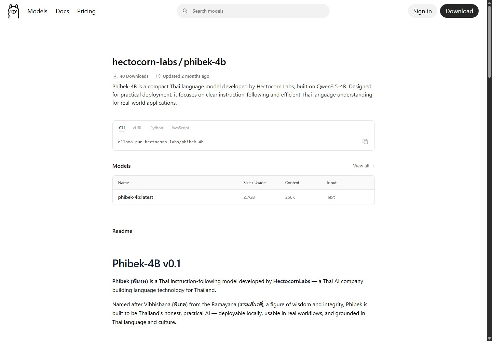
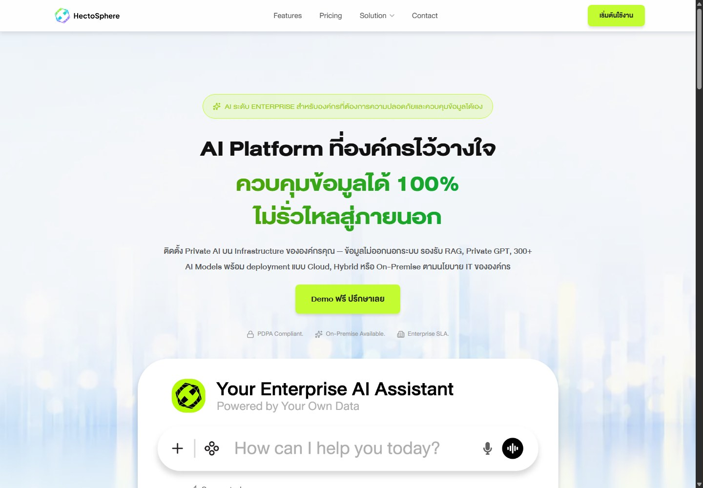
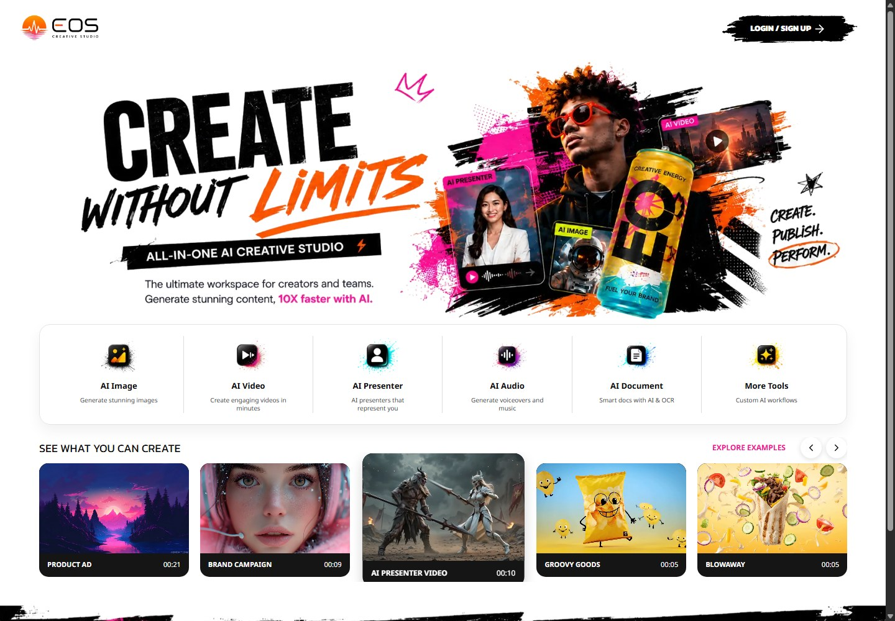
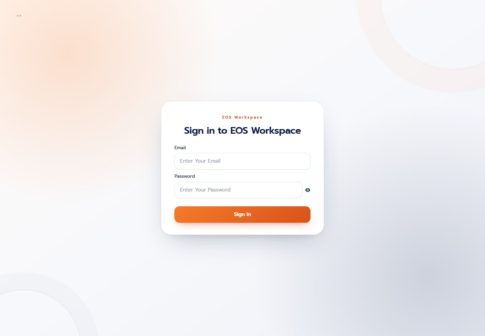
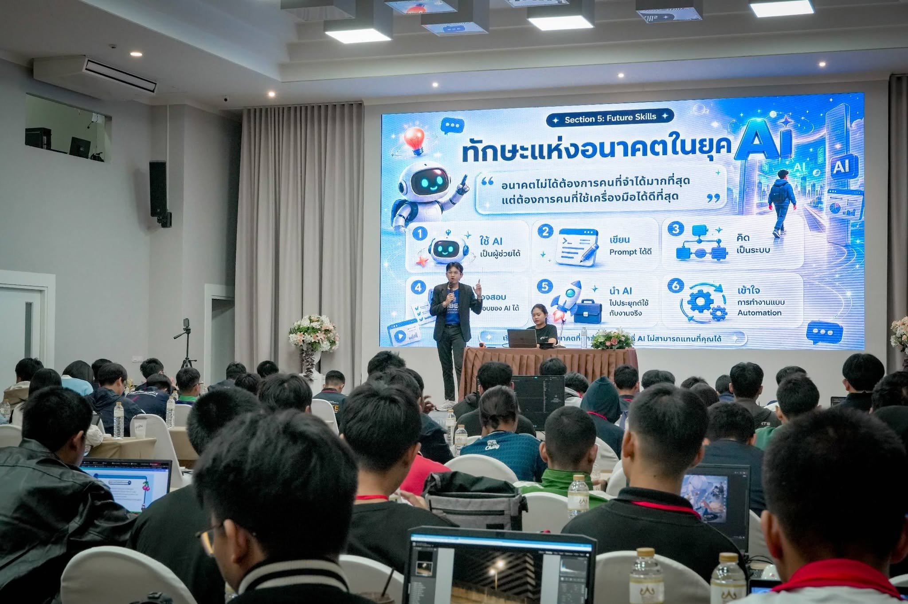
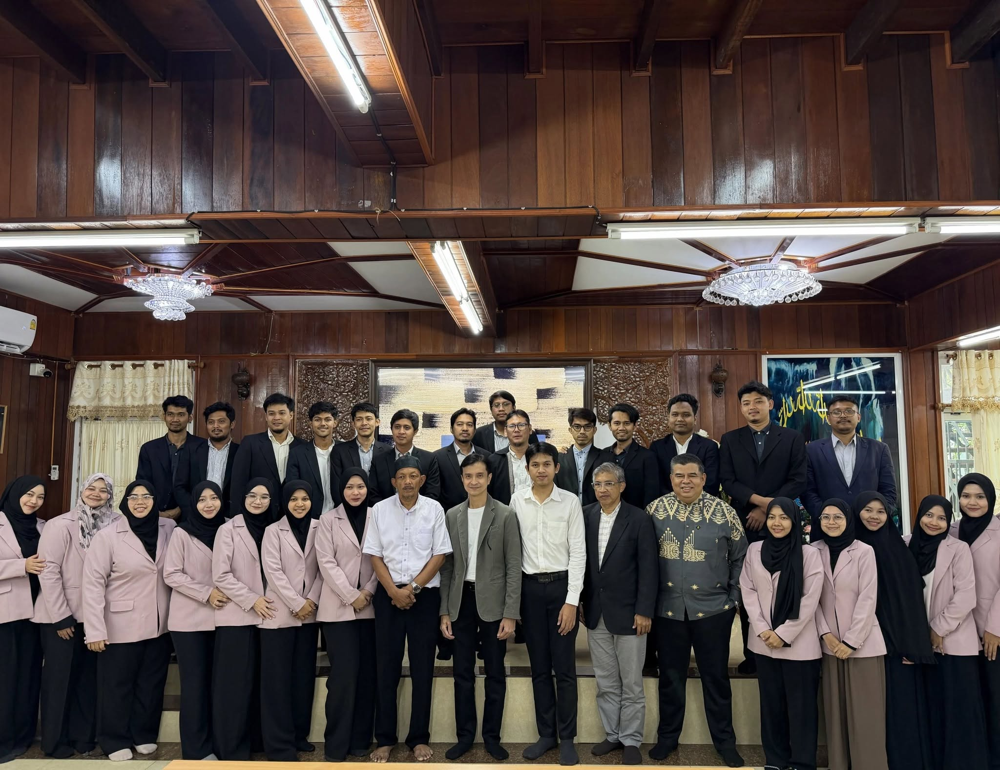
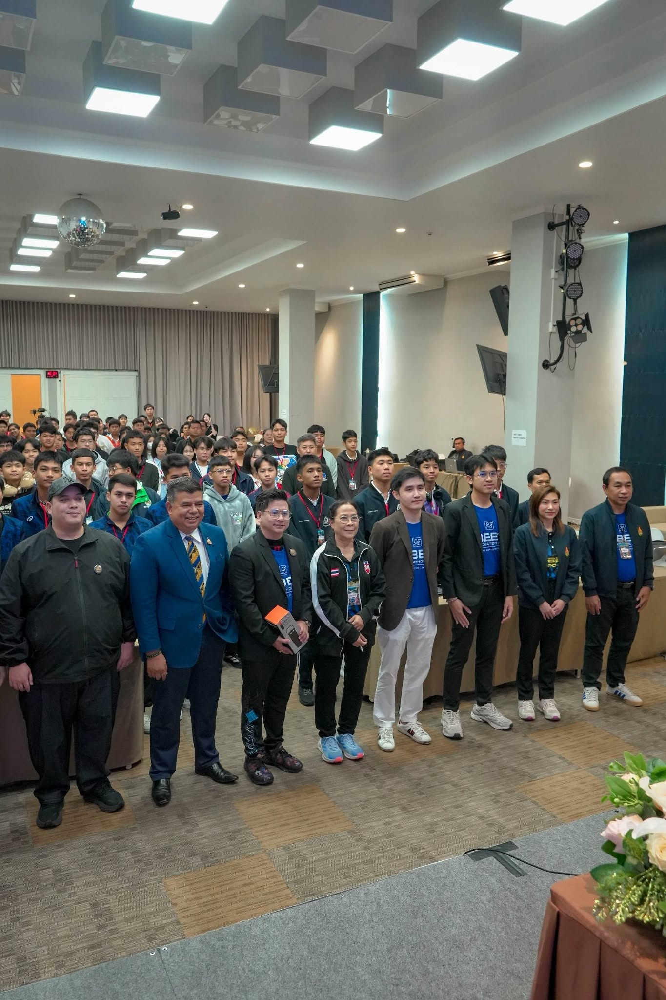
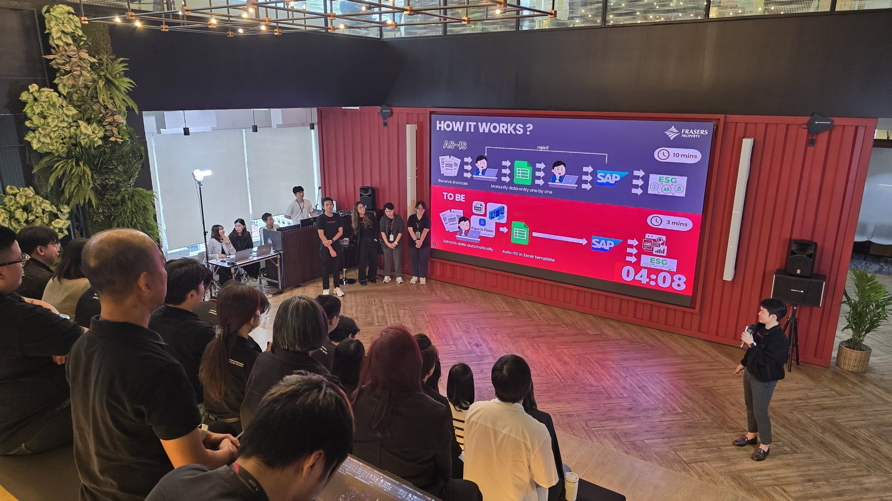
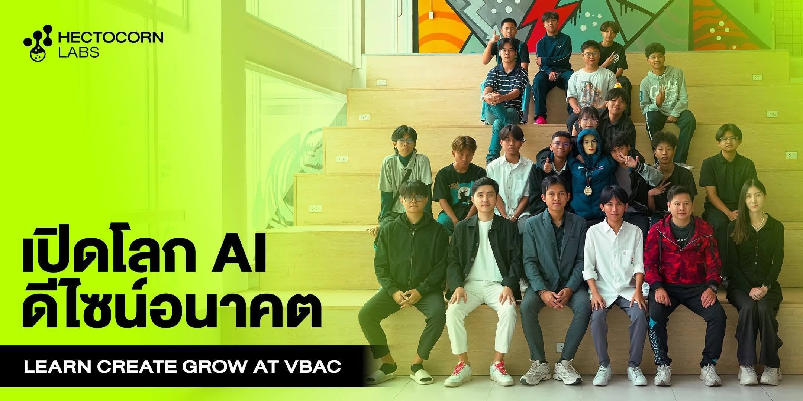

CONSULTING
รับเป็นที่ปรึกษา AI
สำหรับผู้บริหารและทีมที่ต้องการเลือกโจทย์ วาง Roadmap หรือทบทวนสถาปัตยกรรมก่อนลงทุนพัฒนา
ขอบเขตหลัก: กลยุทธ์ แผนงาน และแนวทางออกแบบAI FOR A MORE CAPABLE TOMORROW
AI CONSULTING &
IMPLEMENTATION
เริ่มจาก Process ของคุณ
ผมช่วยหา Use Case และวาง AI Agent
ให้ทำงานให้ได้จริงครับ
เริ่มจากคุย Process และเป้าหมายของทีม เพื่อประเมินขอบเขตงานและเสนอราคาที่เหมาะสม
 BANGKOK, THAILAND
BANGKOK, THAILANDปพัฒน์ชัย สิงหกุล Paphatchai Singhagul · AI Consultant
01 / FROM STRATEGY TO DELIVERY
กำหนดขอบเขตให้ชัดตั้งแต่ต้น แล้วพัฒนาทีละส่วนให้ทดสอบและตรวจรับได้
CONSULTING
สำหรับผู้บริหารและทีมที่ต้องการเลือกโจทย์ วาง Roadmap หรือทบทวนสถาปัตยกรรมก่อนลงทุนพัฒนา
ขอบเขตหลัก: กลยุทธ์ แผนงาน และแนวทางออกแบบIMPLEMENTATION
สำหรับธุรกิจที่มีโจทย์และต้องการผู้ลงมือสร้าง Agent เชื่อมระบบ ทดสอบ และส่งมอบให้ทีมใช้งาน
ขอบเขตหลัก: พัฒนา เชื่อมต่อ ทดสอบ และส่งมอบEND-TO-END
สำหรับองค์กรที่ต้องการคนช่วยวางทางและพัฒนาไปด้วยกัน เริ่มจากโครงการนำร่องแล้ววางแผนขยายผล
ขอบเขตหลัก: Strategy → Design → Implementationเลือกจ้างเฉพาะช่วงหรือครบกระบวนการได้ โดยตกลงขอบเขต ระยะเวลา และเกณฑ์ตรวจรับก่อนเริ่มงาน
STRATEGY
คุยกับผู้บริหารและทีม ประเมินโอกาสของ AI ความพร้อมของข้อมูลและระบบ เพื่อกำหนดเป้าหมาย ลำดับโครงการ และแผนขยายผล
โจทย์ที่ควรเริ่ม · ลำดับความสำคัญ
ขอบเขตงาน · เกณฑ์วัดผล
DESIGN
ออกแบบบทบาทและการประสานงานของ Agent กำหนดการเชื่อมข้อมูล เครื่องมือ สิทธิ์เข้าถึง และจุดอนุมัติโดยคน
Workflow · สถาปัตยกรรมระบบ
สิทธิ์ข้อมูล · แผนทดสอบ
IMPLEMENTATION
เริ่มจากต้นแบบ ทดสอบกับข้อมูลและงานของทีม แล้วเชื่อมระบบจริงตามขอบเขตที่ตกลง
ระบบที่ทดสอบแล้ว · คู่มือใช้งาน
การส่งต่อความรู้ · แนวทางดูแลระบบ
START WITH YOUR EVERYDAY WORK
DELOITTE THAILAND / 2026
ผลสำรวจองค์กรในไทยชี้ว่า การหาโจทย์และความพร้อมของทีมยังเป็นอุปสรรคต่อการนำ AI ไปใช้
ที่มา: Deloitte · Thailand Digital Transformation Survey 2026 – Enterprise AI Focus ↗
02 / WHAT I CAN BUILD FOR YOUR BUSINESS
ออกแบบระดับความสามารถให้ตรงกับโจทย์ ตั้งแต่การใช้เครื่องมือทำงานแทนคนบางขั้นตอน ไปจนถึงการประสานหลาย Agent ภายใต้กติกาขององค์กร
พัฒนา Agent ให้ค้นข้อมูล วิเคราะห์ เรียกใช้ API และทำงานตามขอบเขตที่กำหนด พร้อมส่งต่อให้คนเมื่อเจอข้อยกเว้น
รับคำขอลูกค้า ตรวจข้อมูลสินค้า เตรียมร่างข้อเสนอ และบันทึกข้อมูลเข้าระบบหลังผ่านการอนุมัติ
ออกแบบ Agent หลายหน้าที่ให้ส่งต่องานและข้อมูล เชื่อมกับ Automation และระบบเดิม พร้อมตรวจผลลัพธ์ในแต่ละขั้น
อ่านเอกสาร ตรวจความครบถ้วน เทียบข้อมูลในระบบ ส่งอนุมัติ และดำเนินการต่อ พร้อมติดตามสถานะงาน
วางสถาปัตยกรรมให้ Agent ของหลายทีมเชื่อมข้อมูลและเครื่องมือร่วมกัน โดยกำหนดสิทธิ์ เจ้าของงาน และการกำกับดูแลอย่างเป็นระบบ
การประสานงานระหว่าง Agent · สิทธิ์เข้าถึง · จุดอนุมัติโดยคน · บันทึกการทำงาน · การประเมินคุณภาพและต้นทุน
ตัวอย่างเหล่านี้แสดงขอบเขตงานที่รับพัฒนา โดยประเมินความพร้อมของข้อมูล ระบบเชื่อมต่อ และข้อกำหนดขององค์กรก่อนกำหนดขอบเขตโครงการ
EXPERIENCE
จากการพัฒนาระบบองค์กร
สู่การสร้างผลิตภัณฑ์และบริการ AI
สวัสดีครับผมชื่อเจา รับให้คำปรึกษา ออกแบบ และพัฒนา AI Agent ที่เชื่อมกับข้อมูล เครื่องมือ และระบบขององค์กร ตั้งแต่ผู้ช่วยเฉพาะงาน ไปจนถึงระบบหลาย Agent ที่ประสานงานข้ามทีม พร้อมกำหนดสิทธิ์ การอนุมัติ และการติดตามผล
ปัจจุบันเป็น Founder & CPO ที่ EOS Labs บริษัทที่พัฒนา EOS Creative และ EOS Workspace ในปี 2026 ดำรงตำแหน่งประธานเจ้าหน้าที่ฝ่ายปฏิบัติการ ที่ Hectocornlabs พร้อมประสบการณ์ด้านการพัฒนาซอฟต์แวร์ สถาปัตยกรรมระบบ และการนำ AI ไปใช้ในองค์กร
EXPERTISE
มองทั้งระบบ ข้อมูล และวิธีทำงานของคน เพื่อให้สิ่งที่พัฒนาตอบโจทย์ธุรกิจ
AI Strategy · System Design · Data Architecture · การวางแผนเชื่อมต่อระบบ
LLM · RAG · LangChain · n8n · API · Private AI · Workflow Automation
C# .NET · Go · PHP Laravel · Vue · MSSQL / MySQL · Cross-functional Teams
03 / PRODUCT EXPERIENCE
ผลงาน 4 โปรดักต์จาก Hectocornlabs และ EOS Labs ครอบคลุมโมเดลภาษา แพลตฟอร์มองค์กร เครื่องมือสร้างสื่อ และพื้นที่ทำงานกับ AI

HECTOCORNLABS / OPEN-SOURCE MODEL
โมเดลภาษาไทยแบบ Open Source สำหรับทดลอง พัฒนา และต่อยอดระบบ AI
ดูโมเดลบน Ollama
HECTOCORNLABS / ENTERPRISE PLATFORM
แพลตฟอร์ม AI สำหรับองค์กร เชื่อมองค์ความรู้ภายในกับผู้ช่วยและขั้นตอนการทำงาน
สำรวจ HectoSphere
EOS LABS / CREATIVE STUDIO
สตูดิโอ AI สำหรับครีเอเตอร์และทีม สร้างภาพ วิดีโอ พรีเซนเตอร์ และเสียง พร้อมเครื่องมือเอกสารและ OCR
สำรวจ EOS Creative
EOS LABS / AI WORKSPACE
พื้นที่ทำงานกับ AI บนเว็บ เข้าใช้งานผ่านแพลตฟอร์ม Workspace ของ EOS Labs
เปิด EOS WorkspaceSHARING KNOWLEDGE IN PRACTICE
ภาพจากกิจกรรมบรรยายและแบ่งปันความรู้ AI สะท้อนประสบการณ์การสื่อสารกับผู้เข้าร่วมหลากหลายกลุ่ม
ON STAGE / VIDEO HIGHLIGHT · 34 วินาที
บรรยายในงาน สพฐ. แบ่งปันแนวคิดการใช้ AI การเขียน Prompt และการนำเครื่องมือไปประยุกต์กับงานจริง ชมไฮไลต์ 34 วินาทีและภาพบรรยากาศจากงานเดียวกัน
กดเล่นเพื่อชมคลิป พร้อมเปิดเสียงหรือขยายเต็มจอได้


กิจกรรมกับสำนักงานคณะกรรมการอิสลามประจำจังหวัดสมุทรปราการ ครอบคลุมพื้นฐาน AI และการประยุกต์ใช้ในองค์กร

ภาพบรรยากาศร่วมกับผู้เข้าร่วมงาน จากอัลบั้มกิจกรรมบน Facebook

FRASERS PROPERTY / AI WORKFLOW
นำเสนอการใช้ AI อ่านข้อมูลจากเอกสาร invoice และเตรียมเปิด PO อัตโนมัติ ลดเวลาจาก 10 นาทีเหลือ 3 นาที

VBAC · โพสต์วันที่ 16 มิถุนายน
ร่วมแบ่งปันความรู้และแนวทางใช้ AI อย่างสร้างสรรค์ให้ผู้เรียนที่ VBAC พร้อมสร้างแรงบันดาลใจในการนำเทคโนโลยีไปต่อยอด โดย Hectocornlabs ร่วมเป็นส่วนหนึ่งของกิจกรรม
CONTINUOUS LEARNING
หลักสูตรด้าน AI, Prompt Engineering และการพัฒนาระบบ จาก Google, Microsoft และสถาบันการศึกษา
 Google AI Essentials Specialization ↗
Google AI Essentials Specialization ↗
 Generative AI และการใช้งาน ChatGPT เพื่อการศึกษาค้นคว้า ↗
Generative AI และการใช้งาน ChatGPT เพื่อการศึกษาค้นคว้า ↗
 Introduction to Artificial Intelligence in the Workplace ↗
Introduction to Artificial Intelligence in the Workplace ↗
 Artificial Intelligence in Content Marketing ↗
Artificial Intelligence in Content Marketing ↗
 เขียนโค้ดคู่กับ AI เสร็จไว + ไม่ตกเทรนด์ ↗
เขียนโค้ดคู่กับ AI เสร็จไว + ไม่ตกเทรนด์ ↗
 Basic Prompt Engineering ↗
Basic Prompt Engineering ↗
 Fundamentals of Machine Learning ↗
Fundamentals of Machine Learning ↗
 Fundamental AI Concepts ↗
Fundamental AI Concepts ↗
 Fundamentals of AI Agents on Azure ↗
Fundamentals of AI Agents on Azure ↗
 Build a RAG-based Copilot with Azure AI Studio ↗
Build a RAG-based Copilot with Azure AI Studio ↗
 Azure AI: Document Intelligence & Knowledge Mining ↗
Azure AI: Document Intelligence & Knowledge Mining ↗
 Fundamentals of Computer Vision ↗
Fundamentals of Computer Vision ↗BEFORE WE START
เริ่มต้นได้โดยไม่จำเป็นต้องลงทุนก้อนใหญ่ครับ ผมจะช่วยเลือกงานที่มีโอกาสสร้างความคุ้มค่าและวางขอบเขตบริการให้เหมาะกับงบประมาณของธุรกิจ พร้อมเสนอค่าใช้จ่ายที่ชัดเจนก่อนตัดสินใจ
คุยได้ครับ เริ่มจากเล่างานที่ใช้เวลามาก งานที่ทำซ้ำ หรือปัญหาที่ทีมเจอ เพื่อช่วยกันคัดเลือกโจทย์และประเมินว่าควรใช้ AI หรือระบบอัตโนมัติแบบใด
เริ่มจากตรวจสอบระบบเดิมก่อนครับ หากเชื่อมต่อผ่าน API หรือวิธีอื่นที่เหมาะสมได้ ก็สามารถต่อยอดจากเครื่องมือที่ทีมใช้อยู่ โดยข้อจำกัดจะนำมาพิจารณาในขั้นออกแบบ
โปรดเตรียมตัวอย่างขั้นตอนการทำงาน รายชื่อระบบที่ใช้ปัจจุบัน และผลลัพธ์ที่อยากได้ก็เพียงพอสำหรับการคุยเบื้องต้น ระยะเวลาและค่าใช้จ่ายจะประเมินตามขอบเขต การเชื่อมต่อ และความพร้อมของข้อมูลหลังเข้าใจโจทย์
มั่นใจว่าข้อมูลทั้งหมดจะเป็นขององค์กร 100% และถูกจัดเก็บใน VPS ที่แยกขององค์กรออกจากกัน เป็นความลับ ปลอดภัยด้วย Providor ระดับโลกและมีมาตรฐานความปลอดภัยขั้นสูง สามารถให้ทางผมดูแลให้หรือจะนำไปดูแลเองก็ได้ตามความต้องการ
ผมสามารถกำหนดขอบเขตข้อมูลและสิทธิ์เข้าถึงให้ AI ตั้งแต่ขั้นออกแบบให้ได้ จากนั้นเลือกรูปแบบติดตั้งให้เหมาะกับข้อกำหนดขององค์กร และวางการทดสอบโดยคน โดยเฉพาะงานที่มีผลกระทบร้ายแรงต้องมีคนอยู่ในขั้นตอนอนุมัติก่อนดำเนินการเสมอ
ผมมีคู่มือการใช้งาน รวมถึงถ่ายทอดความรู้ และแนวทางดูแลระบบไว้ให้ในขอบเขตงานพื้นฐานอยู่แล้วครับ ส่วนการติดตามผลหรือดูแลต่อเนื่องสามารถตกลงให้เหมาะกับทีมและระบบที่พัฒนาได้ครับ
LETS TALK ABOUT YOUR WORK
เล่าเป้าหมายธุรกิจ ระบบที่ใช้อยู่ และงานที่อยากให้ AI ช่วย ผมจะช่วยประเมินแนวทางและขอบเขตที่เหมาะสม ตั้งแต่งาน Consulting ไปจนถึงการพัฒนา Agentic Enterprise
Founder & CPO, EOS Labs
COO, Hectocornlabs